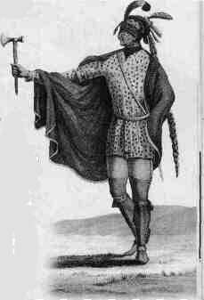
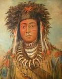
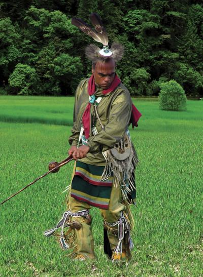

The genus name, Ectopistes, translates as "moving about" or "wandering", while the specific name, migratorius, indicates its migratory habits. The full binomial can thus be translated as "migratory wanderer". The English common name "passenger pigeon" derives from the French word passager, which means "to pass by" in a fleeting manner. While the pigeon was extant, the name passenger pigeon was used interchangeably with "wild pigeon". The bird also gained some less-frequently used names, including blue pigeon, merne rouck pigeon, wandering long-tailed dove, and wood pigeon. In the 18th century, the passenger pigeon was known as tourte in New France (in modern Canada), but to the French in Europe it was known as tourtre. In modern French, the bird is known as tourte voyageuse or pigeon migrateur, among other names.
----THE KASKASKIA ILLINOIS PEOPLE'S LANGUAGE NAMED THE PIGEON "MIMIA"
--------THE OJIBWE PEOPLE'S LANGUAGE NAMED THE PIGEON"OMIIMII"
THE LENAPE PEOPLE'S LANGUAGE NAMED THE PIGEON"AMIMI"In the Native American Algonquian languages, the pigeon was called amimi by the Lenape, omiimii by the Ojibwe, and mimia by the Kaskaskia Illinois. Other names in indigenous American languages include ori'te in Mohawk, and putchee nashoba, or "lost dove", in Choctaw. The Seneca people called the pigeon jahgowa , meaning "big bread", as it was a source of food for their tribes. Chief Simon Pokagon of the Potawatomi stated that his people called the pigeon O-me-me-wog, and that the Europeans did not adopt native names for the bird, as it reminded them of their domesticated pigeons, instead calling them "wild" pigeons, as they called the native peoples "wild" men.